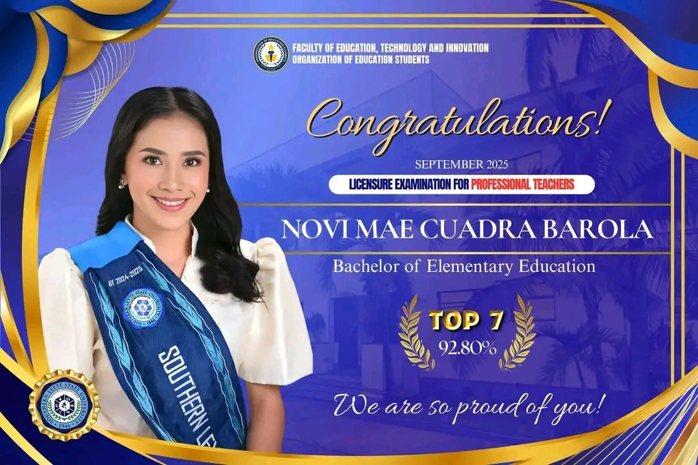
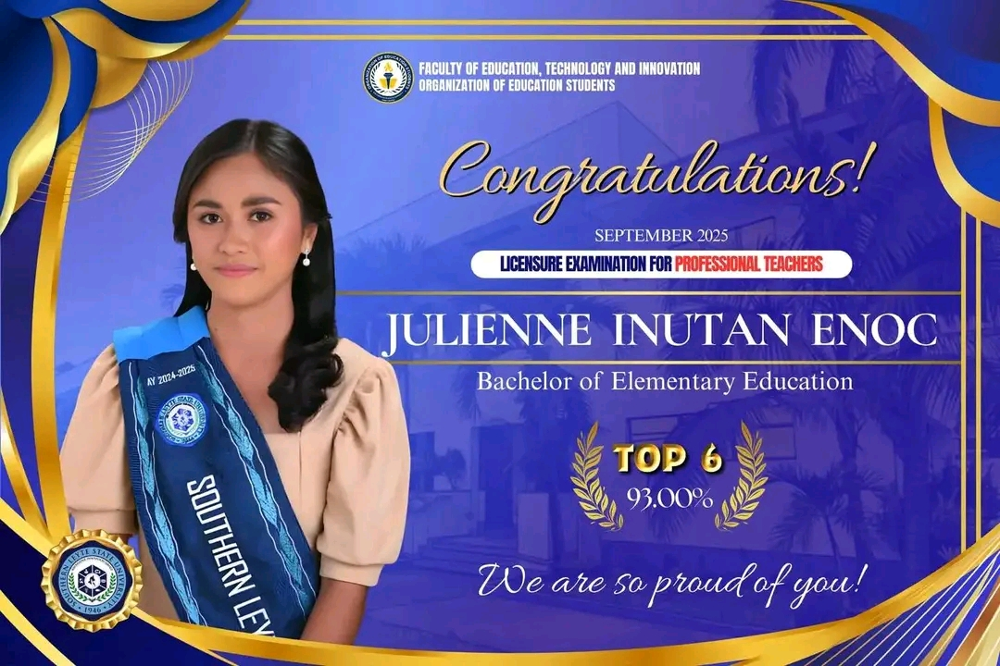
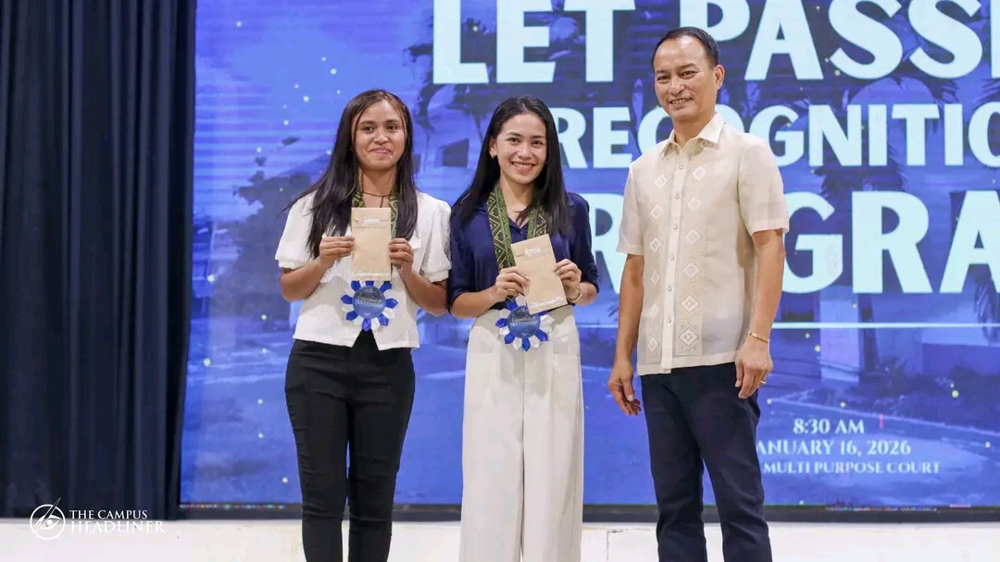
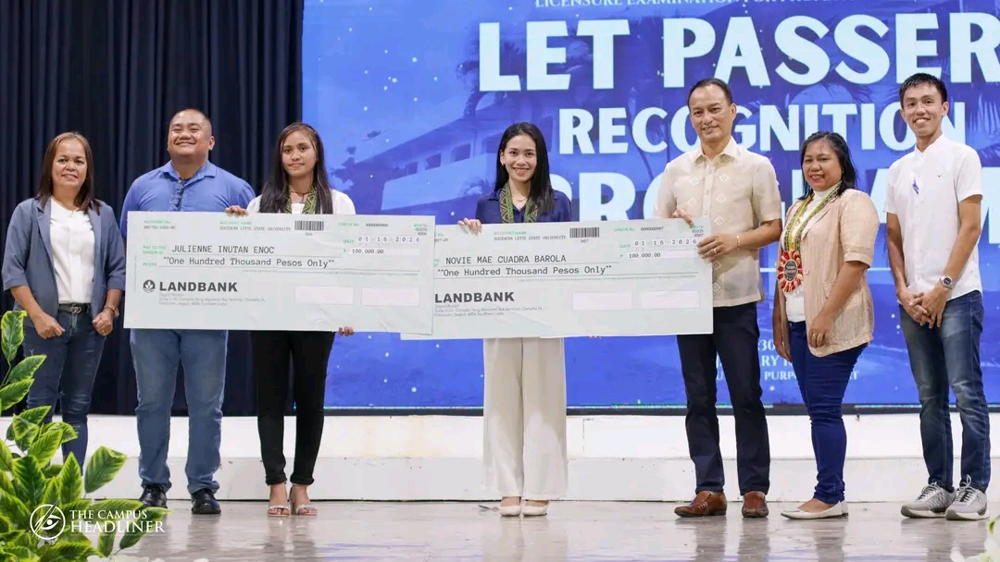
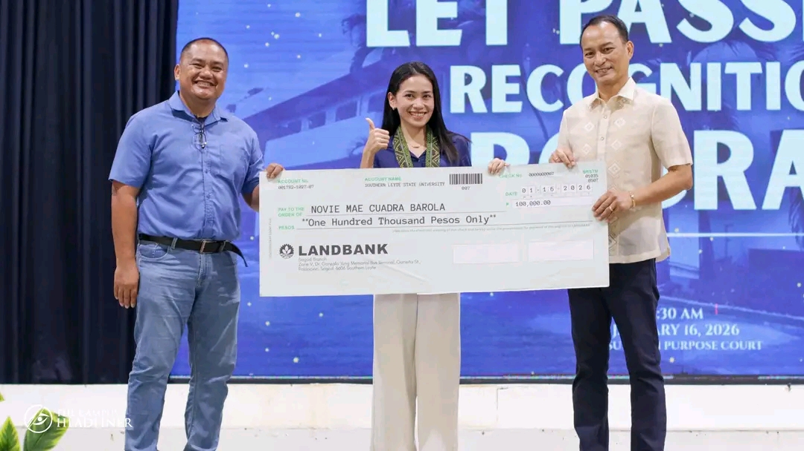
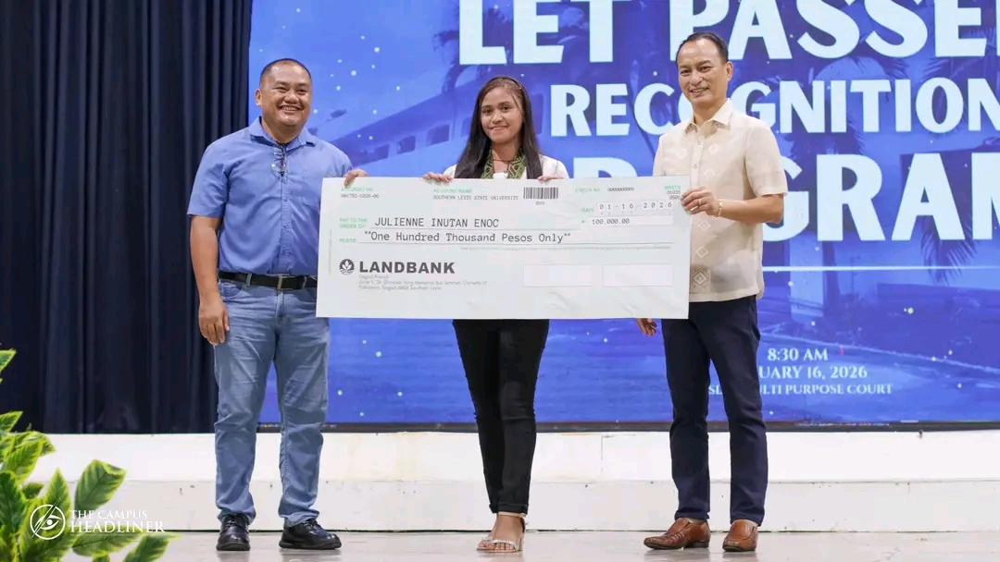
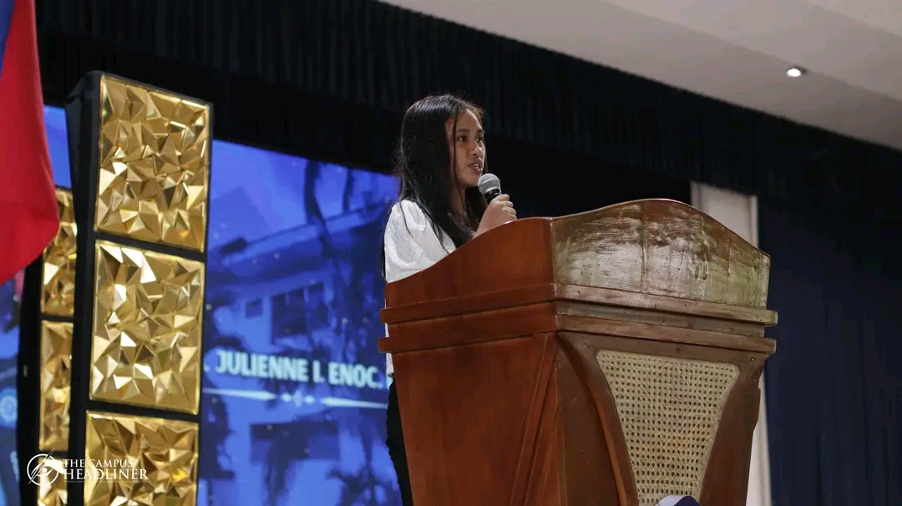

Top LET Achievers: Inspiring Excellence in Future Educators







Novi Mae Cuadra Barola is a dedicated and hardworking graduate of Bachelor of Elementary Education. Her determination, passion for teaching, and strong commitment to excellence helped her achieve Top 7 in the Licensure Examination for Professional Teachers with an impressive rating of 92.80%.
Julienne Inutan Enoc is a passionate and goal-driven Bachelor of Elementary Education graduate. Through her perseverance, discipline, and love for education, she earned Top 6 in the Licensure Examination for Professional Teachers with a remarkable rating of 93.00%.
These outstanding achievers have shown dedication, perseverance, and passion in their journey as future educators. Their success in the Licensure Examination for Professional Teachers reflects not only their knowledge and skills but also their commitment to making a difference in the lives of learners.
Encouragement to Others:
May their achievement inspire other aspiring teachers to continue striving, studying hard, and believing in themselves. Success may not be easy, but with determination, discipline, and faith, anything is possible. Keep going and never give up on your dreams!